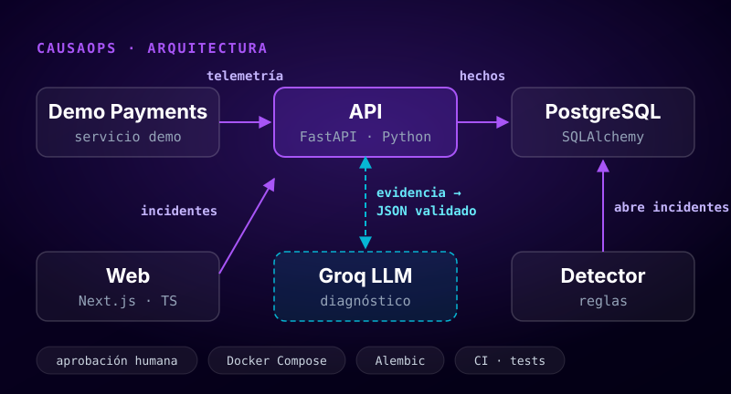

CausaOps
Plataforma de observabilidad y respuesta a incidentes. Un servicio de pagos de demostración envía telemetría; reglas deterministas detectan errores y latencia p95 anómalos, agrupan incidentes y los correlacionan con despliegues. Un LLM genera diagnósticos con esquema JSON estricto que el backend valida contra la evidencia, y la IA nunca ejecuta acciones por su cuenta. Monorepo con Docker Compose, migraciones con Alembic, pruebas unitarias y CI.